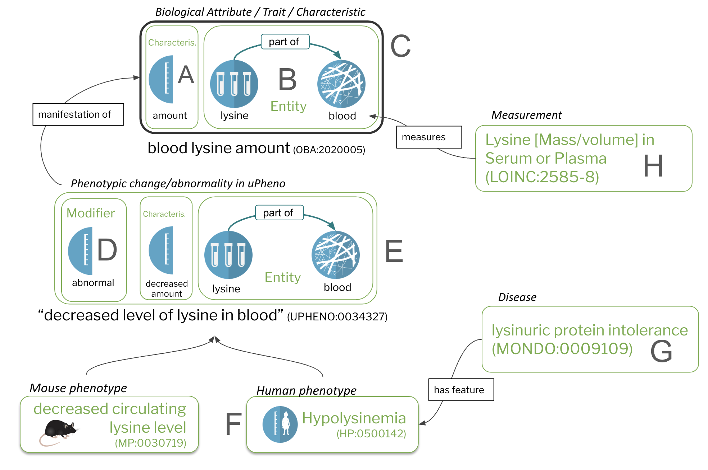

Core concepts of phenotype data
Traits and phenotypes - the Conceptual model of the uPheno framework¶
Overview¶
Here, we discuss the core concepts of the computational phenotype model underpinning the uPheno effort.
Table of contents¶
General characteristics¶
General characteristics
"Characteristics" or "qualities" refer to an inherent or distinguishing characteristic or attribute of something or someone. It represents a feature that defines the nature of an object, organism, or entity and can be used to describe, compare, and categorize different things. Characteristics can be either qualitative (such as color, texture, or taste) or quantitative (such as height, weight, or age).
The Phenotype And Trait Ontology (PATO) is the reference ontology for general characteristics in the OBO world.
Some of the most widely use characteristics can be seen in the following table:
| quality | description | example |
|---|---|---|
| Length (PATO:0000122) | A 1-D extent quality which is equal to the distance between two points. | |
| Mass (PATO:0000128) | A physical quality that inheres in a bearer by virtue of the proportion of the bearer's amount of matter. | |
| Amount (PATO:0000070) | The number of entities of a type that are part of the whole organism. | |
| Morphology (PATO:0000051) | A quality of a single physical entity inhering in the bearer by virtue of the bearer's size or shape or structure. |
Note
Note from the authors: The descriptions above have been taken from PATO, but they are not very.. user friendly.
Biological Trait/Characteristics/Attribute¶
Characteristics such as the one above can be used to describe a variety of entities such as biological, environmental and social.
Biological traits/attributes
Biological traits, or attributes, are characteristics that refer to an inherent characteristic of a biological entity, such as an organ (the heart), a process (cell division), a chemical entity (lysine) in the blood. In the clinical domain, biological traits are sometimes subsumed under "observable entity".
The Ontology of Biological Attributes (OBA) is the reference ontology for biological characteristics in the OBO world. There are a few other ontologies that describe biological traits, such as the Vertebrate Trait Ontology and the Ascomycete Phenotype Ontology (APO), but these are more species specific, and, more importantly, are not integrated in the wider EQ modelling framework required for phenotype integration.
Some example terms from OBA:
| Property | Example term | Definition |
|---|---|---|
| Length | OBA:VT0002544 | The length of a digit. |
| Mass | OBA:VT0001259 | The mass of a multicellular organism. |
| Level | OBA:2020005 | The amount of lysine in blood. |
| Morphology | OBA:VT0005406 | The size of a heart. |
The Bearer (of Biological Characteristics)¶
Bearer
In biological contexts, the term "bearer" refers to the entity that possesses or carries a particular characteristic or quality being observed. The bearer can be any biological entity, such as an organism, an organ, a cell, or even a molecular structure, that exhibits a specific trait or feature.
Some examples:
- Organism as a Bearer:
- Example: A specific tree (such as an oak tree) is the bearer of the characteristic 'height'.
- Explanation: The tree as an organism carries or has the property of height, making it the bearer of this characteristic.
- Organ as a Bearer:
- Example: The heart of a mammal can be the bearer of the characteristic 'heart size'.
- Explanation: Here, the heart is the organ that possesses the 'heart size' charactertistic. The characteristic ('heart size') is a quality of the heart itself.
- Cell as a Bearer:
- Example: A red blood cell is the bearer of the characteristic 'cell diameter'.
- Explanation: The diameter is a property of the individual cell. Thus, each red blood cell is the bearer of its diameter measurement.
- Molecular Structure as a Bearer:
- Example: A DNA molecule can be the bearer of the characteristic 'sequence length'.
- Explanation: The length of the DNA sequence is a property of the DNA molecule itself, making the molecule the bearer of this characteristic.
In each example, the "bearer" is the entity that has, carries, or exhibits a particular biological characteristic. This concept is fundamental in biology and bioinformatics for linking specific traits, qualities, or features to the entities that possess them, thereby enabling a clearer understanding and categorization of biological diversity and functions.
Phenotypic change (aka phenotype)¶
Phenotypic change
A phenotypic change describes a deviation from reference morphological, physiological, or behavioral trait.
This is the most widely used, and most complicated category of phenotype terms for data specialists to understand.
Conceptually, a phenotypic change comprises:
- a biological attribute (which includes a bearer)
- an categorical "change" modifier
- (optionally) a directional modifier (increased / decreased)
- a comparator
Biological attributes such as blood lysine amount (OBA:2020005) have been discussed earlier in this document.
The most widely used change modifier used in practice is abnormal (PATO:0000460).
This modifier signifies that the phenotypic change term describes a deviation that is abnormal, such as "Hyperlysinemia" (HP:0002161), which describes an increased concentration of lysine in the blood.
Other modifiers include normal (PATO:0000461), which describes a change within in the normal range (sometimes, unfortunately, interpreted as "no change").
A directional modifier like increased (PATO:0040043) or decreased (PATO:0040042). In practice, most of our "characteristic" terms have specialised directional variants such as decreased amount (PATO:0001997) which can be used to describe phenotypes.
The Unified Phenotype Ontology (uPheno) is the reference ontology for describing phenotypic changes in the OBO world. There are a many species-specific ontologies developed across a wide range of research communities, such as the Mammalian Phenotype Ontology (MP), the Human Phenotype Ontology (HPO) and the Drosophila Phenotype Ontology (DPO), see here.
Some example terms from uPheno can be seen in the following table:
| Property | Example term | Definition |
|---|---|---|
| Length | UPHENO:0072215 | Increased length of the digit. |
| Mass | UPHENO:0054299 | Decreased multicellular organism mass. |
| Level | UPHENO:0034327 | Decreased level of lysine in blood. |
| Morphology | UPHENO:0001471 | Increased size of the heart. |
The nuissance of "implicit comparators" in terms describing phenotypic change¶
Danger
Comparators are the most confusing aspects of phenotypic change. Read on.
The first question someone has to ask when they see a concept describing is change like increased blood lysine levels is "compared to what?".
Depending on biological context, the assumed comparators vary widely.
For example, in clinical phenotyping, it is mostly assumed that
a phenotypic feature corresponds to a deviation from the normal range, see HPO docs.
However, it is just just as easily imaginable that HPO terms are used to describe change compared to a previous state of the same individual (increased tumor size compared to last time we checked).
In research settings such as GWAS study annotations, HPO terms are used to annotate variants where a statistically significant change was observed compared to the general population.
The same is true for many model phenotyping efforts such as MGI, where the situation is even further complicated that the comparator is not "the general population", but a control group. In summary, comparators can be:
- The general population ("wild type" in a lot of biological research)
- A non-representative sample of the general population (blood glucose values of all diabetes patients)
- A control group of a specific mouse strain
- A previous state of a study subject (e.g. SNOMED).
The compared charactertistics could describe:
- A deviation from some notion of normality (abnormal), for example a measurement outside the normal range
- A statistically significant change (which includes the above, but also statistically significant variation within the normal range)
Info
No matter how much we want it - concepts describing phenotypic change will be used in many creative ways, and unfortunately, once the data hits your data analysis pipeline, you will likely not know for sure the nature of the comparator. Where you can, you should try to figure it out from the metadata.
Tip
This sounds like bad news. However, keep one thing in mind: Phenotype associations (to anything, including genes) are rarely strictly causal. Even if a change is observed "compared to some non-representative control" there is likely to be some signal useful for downstream inference - somehow, the "gene has something to do with the phenotype".
The chaotic terminology around "phenotype"¶
In the clinical domain, many ontologies exist that define concepts that are very strongly related to our notion of "phenotype".
Clinical Findings
In SNOMED, for example, "clinical findings" are defined as normal/abnormal observations, judgments, or assessments of patients (e.g. Abnormal urinalysis (finding)).
For most analytic purposes, we think of SNOMED's (and other medical terminologies) notion of "clinical finding" as something ortologous to our notion of "phenotype" (and their "observable entity" as a trait/biological attribute). However, if one gets into the weeds, many discrepencies in judgement can be observed, in particular when it comes to the separation from disease.
Phenotype and Phenotypes
"Phenotype" is typically used in its "singular" form to describe the set of all observable characteristics of a subject. However, because we have over time gotten used to talking about "cardiovascular phenotype" and "increased blood glucose level" as individual phenotypes, we have started using the plural form more, i.e. "phenotypes".
Phenotypic profile
We now tend to use the term "phenotypic profile" to describe the set of phenotypes that an organism exhibits at some point in time, or that is commonly associated with a disease.
Phenotypic feature
"Phenotypic feature" is a commonly used term that refers to the same idea as "phenotype", "clinical finding" and "phenotypic change", but mostly in the context of disease modelling to describe an observable characteristic commonly associated with a disease.
Phenotypic abnormality
"Phenotypic abnormality" is the formal term to describe a concept in the HPO and other phenotype ontologies, and is used to refer to a phenotypic change outside the normal range. There is a bit of an assumption here, compared to the more general concepts described in this section, which is that the term should refer to a "deviation from the normal range", but, as described in the section of "implicit comparators", this assumption does not always hold in practice.
Phenotypic change
"Phenotypic change" is a recent invention by David Osumi-Sutherland in an attempt to subsume the ideas above, in particular to explicitly step back from the concept of "deviation from normal" to "statistically significant deviation" (which includes the normal range).
Diseases¶
Diseases are among the most important concepts in the phenotype data space. Phenotypes relate to diseases in a variety of ways (e.g. as phenotypic features of the disease). One big source of confusion in our community is the seperation of "phenotypic features" or changes from diseases. The HPO docs provide an explanation geared at clinicians to help them distinguish between the two.
The quest on developing an operational definition is still ongoing, but for now, we recommend to go with the following basic assumptions:
- There is a difference between disease and phenotype.
- Phenotypes are features of diseases. Diseases can be associated with one or more phenotypic features. In the case of just one specific phenotype associated, we sometimes talk about "isolated X" as the disease, for example "Isolated Growth Hormone Deficiency (IGHD)". IGHD is a condition where the pituitary gland produces insufficient growth hormone, leading to stunted growth.
- Diseases, despite their grounding in biological reality, should be perceived mostly as social constructs that (adjusted from HPO docs):
- Are used to capture a diagnosis (not just an observation - a judgement).
- Are associated with a defined etiology (whether identified or as yet unknown, i.e. idiopathic). This is not about have some cause. This is about having a specific cause, even if it is unknown.
- Have a defined time course (more or less well understood).
- If treatments exist, there is a characteristic response to them. The key point is that the above are part of the disease definition.
Measurements¶
Measurements are not traits
In biological data curation, its essential to differentiate between traits (observable characteristics such as "blood glucose level") and measurements (a process to observe such characteristics, e.g. "blood glucose level assay", "BMI").
Just from the term itself this is often difficult. "Blood glucose level" can refer both a measurement and a trait when taken out of context, but the ontologies they appear in should differenciate cleanly between the two.
Here are some ways to distinguish them:
- traits are
- observable characteritics of an organism
- can be qualitative ("red eye colour") or quantitative ("35 cm tail length")
- measurements are
- activties performed by an agent (such as a researcher)
- involve the quantification or qualification of a specific trait
- correspond to measurement instruments / techniques (such as assays, BMIs)
In practice, it is true that a lot of data records a wild mix of the two. It is the job of (semantic) data modeling specialists to clearly distinguish the two when integrating annotated data from sources with divergent curation practices.
Putting it all together¶

Figure 1: Core concepts
Characteristics (A) and bearers of characteristics (B) are the core constituents of traits/biological attributes (C). Phenotypes are comprised of trait terms (C) combined with a modifier (D). Species-specific phenotypes (F), including phenotypic abnormalities defined in the Human Phenotype Ontology (HPO) are feature of diseases (G). Measurements (H), such as assays, quantify or qualify (measure) traits (C).